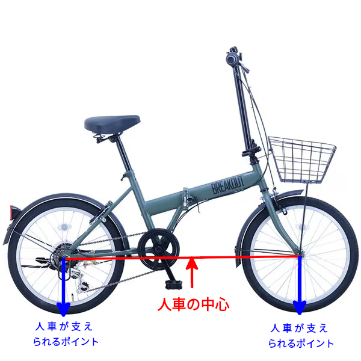

<!DOCTYPE HTML>
<html lang="ja">

<head>
	<meta charset="UTF-8">
	<title>The road Orz passed by</title>

	<meta http-equiv="X-UA-Compatible" content="IE=edge">
	<meta name="viewport" content="width=device-width, initial-scale=1.0">
	<meta name="format-detection" content="telephone=no">
	<link rel="canonical" href="https://mitsugu.github.io/likebar/202501/27.html">
	<meta name="title" content="より安全な転倒に向けて -日常編-">
	<meta name="description" content="より安全な転倒のための方法論の整理。">
	<meta name="keywords" content="日記, blog">
	<meta property="og:type" content="article">
	<meta property="og:title" content="より安全な転倒に向けて -日常編-">
	<meta property="og:description" content="より安全な転倒のための方法論の整理。">
	<meta property="og:url" content="https://mitsugu.github.io/likebar/202501/27.html">
	<meta property="og:site_name" content="The road Orz passed by">
	<meta property="og:html" content="より安全な転倒のための方法論の整理。">

	<meta property="og:image" content="https://mitsugu.github.io/likebar/202501/fig2025012701.png">
	<meta property="og:image:width" content="512">
	<meta property="og:image:height" content="384">

	<link rel="stylesheet" type="text/css" href="../index.css">
	<script src="https://cdn.jsdelivr.net/npm/@nikolat/makibishi@0.3.3"></script>
	<script defer src="https://cdn.jsdelivr.net/npm/nostr-zap@1.3.0"></script>
	<style>
		img {
			margin:1em;
		}
		dt {
			font-weight:bold;
		}
		dd {
			margin-bottom:1em;
		}
	</style>
</head>

<body>
	<h1>The road Orz passed by 2025 年 01 月</h1>
	<div id="contents">
		<h3 id="20250127">01 月 27 日 ( 月 )</h3>
		<div id="2025012701" class="top-mutter">
			<h4>より安全な転倒に向けて -日常編-</h4>
			<p>小脳性協調運動障害がある状態で、日常生活における、怪我のリスクを減らすための、より安全な転倒方法について整理を試みる。自転車からの落車における被害軽減については別項で整理を試みるので除外する。</p>
			
			<dl>
			<dt>前提</dt>
			<dd>
				<ol>
				<li>極力転倒せずにすむためのあらゆる努力は継続する</li>
				<li>環境整備などにも限界がある</li>
				<li>介護職、看護職による補助にも限界がある</li>
				<li>とある介護施設による研究によると、介護職のサポートがある状態で、介護職見守り時の転倒事故が 30%、<span title="介護職身体介助時の転倒にのみ職員と施設に過失が発生するので、それ以外の見守り時も含めて施設内転倒事故は無視して構わない、という論を展開されていて閉口した。その施設では、施設内転倒時に支援は一切しないそうだ">介護職介助時の転倒事故が 25%</span>、残り 45% がなんとか介助職により転倒が防止されたとのこと</li>
				<li>つまり介護職や看護職が目の前にいても、転倒しそうになった人の半数以上はそのまま転倒する</li>
				<li>とはいえ、実は転倒事故の大半が、付近に介助職、看護職がいないときの単独事故</li>
				<li>つまり転倒しそうになった人の大半は、みんな転倒する</li>
				<li>転倒事故 0 を達成することしか考えないのは、現実を無視することになる</li>
				<li>転倒事故 0 を目標とするのはもちろん非常に重要だが、それは絶対に達成できない</li>
				<li>転倒時に被害を軽減する方法が絶対に必要</li>
				<li>他の安全向上要因を補間するためにも、転倒当事者の身体能力開発が絶対に必要</li>
				</ol>
			</dd>

			<dt>転倒の力学</dt>
			<dd>
				<p>体を一本の棒に例えた場合、転倒時は足と床の接点が支点、体のへその辺りが力点、頭部付近が作用点となり、テコの原理で全身が前方に向けて飛ぶ力が加わる。</p>
				
				<p>このため、顔面から路面に打ち付ける可能性が強くなる。また上半身の運動量が大きくなることから、手を着くと、手や、手首、腕の骨折の可能性が高まる。また他の部位の骨折の可能性も高まる。</p>
				<p>さらに転倒しないように力が入ると、支点から後方に足を蹴り出す力が加わってしまい、運動量がさらに増加する。それによりさらに怪我の被害が大きくなる可能性が強くなる。</p>
				<p>上図と上記概説は、前方への転倒を前提としている。後方への転倒は、後頭部を強打する可能性があり、場合によっては生命に関わる。</p>
			</dd>

			<dt>転倒運動の変換</dt>
			<dd>
				<p>転倒時は通常水平方向への運動エネルギーと、重力と地面からの高さによる位置エネルギーが発生している。これらのエネルギー量を減ずるための以下の様なアプローチが必要であろう。</p>
				<ul>
				<li>水平方向への運動と、重力による落下運動を、より人体に害のない回転運動やスライディング運動に変換するアプローチ</li>
				<li>重力による位置エネルギーを減ずるアプローチ</li>
				</ul>
			</dd>

			<dt>身体保護の考え方</dt>
			<dd>
				<ol>
				<li>頭部を最優先で守る</li>
				<li>骨折から体を守る</li>
				<li>打撲、擦過傷の軽減を図る</li>
				</ol>
			</dd>

			<dt>転倒スキルの原則</dt>
			<dd>
				<ol>
				<li>転倒を力で耐えようとしない<br>うまくいかないし、力が入ることで被害が大きくなる</li>
				<li>重力に逆らわない、というより逆らえない</li>
				<li>慣性にも逆らわない、といより慣性にも逆らえない</li>
				<li>重力や転倒時の慣性を利用する</li>
				<li>重心を低くすることで物理的ダメージを低減する</li>
				<li>回転運動、スライディングを活用することで、体にかかる運動量を逃がす</li>
				<li>回転運動、つまり転がることがダメージが一番少ない</li>
				<li>ダメージの少ない身体部位を利用して接地する</li>
				</ol>
			</dd>

			<dt>転倒時の原則</dt>
			<dd>
				<ol>
				<li>可能なら柔道や合気道の受け身をする</li>
				<li>しゃがみ込む動作を加える</li>
				<li>頭部を守るために顎を引く</li>
				<li>体を丸めることで、体を回転しすくする</li>
				<li>頭部を両腕で抱え込むようにして保護する</li>
				</ol>
			</dd>

			<dt>安全な転倒所作の例</dt>
			<dd>
				<dl>
				<dt>前回り受け身</dt>
				<dd>
					<dl>
					<dt>メリット</dt>
					<dd>
						<ul>
						<li>恐らく最も安全</li>
						</ul>
					</dd>
					<dt>デメリット</dt>
					<dd>
						<ul>
						<li>習得に練習が必要</li>
						</ul>
					</dd>
					<dt>ポイント</dt>
					<dd>
						<ul>
						<li>膝を曲げるなどして、なるべく低い位置から行う</li>
						</ul>
					</dd>
					</dl>
				</dd>
				<dt>後ろ受け身</dt>
				<dd>
					<dl>
					<dt>メリット</dt>
					<dd>
						<ul>
						<li>習得が割と易しい</li>
						<li>前方への転倒時も、膝を曲げながら体をひねることで、後ろ受け身に持ち込める</li>
						<li>スペースをとらない</li>
						</ul>
					</dd>
					<dt>デメリット</dt>
					<dd>
						<ul>
						<li>失敗すると後頭部を路面で打ってしまう</li>
						</ul>
					</dd>
					<dt>ポイント</dt>
					<dd>
						<ol>
						<li>手で転倒を防ぐことは危険なので考えない</li>
						<li>原則として転倒途中は手を路面につかない</li>
						<li>どうしても手を着くときは、骨折予防のために指先が体の方に向くようにする</li>
						<li>倒れる際にへそを見るようにする</li>
						<li>体を丸める</li>
						<li>柔道の後ろ受け身の要領で、転倒の最後の局面で、両手で路面を打つ</li>
						</ol>
					</dd>
					</dl>
				</dd>
				<dt>その他</dt>
				<dd>
					<p>後日追記していきます。</p>
				</dd>
				</dl>
			</dd>

			<dt>参考になる所作</dt>
			<dd>
				<ul>
				<li>海外の転倒講座</li>
				<li>柔道の受け身 (前回り受け身、後ろ受け身、前受け身、横受け身)</li>
				<li>合気道の受け身</li>
				<li>ハンドボールの倒れ込みシュート</li>
				<li>サッカーのキーパーのセービング</li>
				<li>ロードレーサーの落車時の身のこなし</li>
				<li>バイクレーサーの落車時の身のこなし</li>
				<li>その他</li>
				</ul>
			</dd>

			<dt>参考動画</dt>
			<dd>
				<dl>
				<dt>海外の転倒インストラクション</dt>
				<dd>
					<ul>
					<li><a href="https://youtu.be/Fyan2o7PaxA?si=U1cm4eLzoIEtNm_V" class="external">A 95-year-old man shares his tricks to safe falling</a></li>
					<li><a href="https://youtu.be/s56lcqdGAa4?si=UcAAAw1_o8Wi3m84" class="external">FALLING SAFETY for SENIORS (Part 1) - Falling Safety Techniques - YouTube</a></li>
					</ul>
				</dd>
				<dt>日本の転倒インストラクション</dt>
				<dd>
					<ul>
					<li><a href="https://youtu.be/ChPIHKtzse8?si=5pQD5vcb5JIgzXFC" class="external">転倒の心得～予防と対策～ - YouTube</a></li>
					</ul>
				</dd>

				<dt>柔道の受け身</dt>
				<dd>
					<ul>
					<li><a href="https://youtu.be/ZVzzJ4xDgoE?si=P-eFpviNi4QqsmG0" class="external">How to Fall Safely - 3 Breakfall Techniques - YouTube</a></li>
					<li><a href="https://youtu.be/U5TzV0HRjqY?si=cJQnQ40fMr2xZ5c3" class="external">【正しい受身～後受身～】柔道チャンネル／少年よ！技をみがけ！～柔道上達への道～ - YouTube</a></li>
					<li><a href="https://youtu.be/5nTzF4UTYqI?si=JWlTNDF4L7qeZcyL" class="external">【正しい受身～前受身～】柔道チャンネル／少年よ！技をみがけ！～柔道上達への道～ - YouTube</a></li>
					<li><a href="https://youtu.be/vnMCNXo5wSo?si=BxB2TahX_l9TBDa6" class="external">【正しい受身～横受身～】柔道チャンネル／少年よ！技をみがけ！～柔道上達への道～ - YouTube</a></li>
					<li><a href="https://youtu.be/Aqe2kgKWd1U?si=oQLoSCMDujBPa2dN" class="external">【正しい受身～前回り受身～】柔道チャンネル／少年よ！技をみがけ！～柔道上達への道～ - YouTube</a></li>
					<li><a href="https://youtu.be/X0rP23jQyWw?si=VeDkRTta0-6KrWGl" class="external">小学校での「転び方教室」を広めていきましょう - YouTube</a></li>
					</ul>
				</dd>
				<dt>合気道の受け身</dt>
				<dd>
					<ul>
					<li><a href="https://youtu.be/84l7XTNpJgo?si=AmV0EH6SzWZ7ateB" class="external">稽古資料：基本の受身１ 前受身 - YouTube</a></li>
					<li><a href="https://youtu.be/4ifJUYrMjF4?si=Ku3h7M--Hhqb7cOn" class="external">稽古資料：基本の受身２ 横受身 - YouTube</a></li>
					<li><a href="https://youtu.be/C3qUuCkYkI0?si=5zmdsz42xUsN1-71" class="external">初めての合気道ー前回り受け身 - YouTube</a></li>
					<li><a href="https://youtu.be/JoGH0W7Os1o?si=sWaOM4GspoaVMYAD" class="external">【合気道パーフェクト講座】身体に優しい受け身（初級者〜上級者向け） - YouTube</a></li>
					</ul>
				</dd>
				<dt>ハンドボールの倒れ込みシュート</dt>
				<dd>
					<ul>
					<li><a href="https://youtu.be/3edMu9DV4ho?si=1pNQQ0yXt9HfBGap" class="external">【サイド講座】角度を大きくする「飛びこみ」と痛くない「倒れこみ」のポイント解説！［ハンドボール］ - YouTube</a></li>
					<li><a href="https://youtu.be/g7mjnN-KgM0?si=ixRlRIOxc4dmssbc" class="external">【回転派？滑り派？】自分に合った倒れ込み方を見つけよう！2種類の倒れ込みポイント解説[サイドシュート] - YouTube</a></li>
					</ul>
				</dd>

				<dt>サッカーのキーパーのセービング</dt>
				<dd>
					<ul>
					<li><a href="https://youtu.be/hfZxud-sDtU?si=QdxCaewIT4SGIEzj" class="external">【選手・保護者】ゴールキーパーのダイビング時に痛みを軽減する方法 ゴールキーパーは痛くない！ - YouTube</a></li>
					<li><a href="https://youtu.be/ohJY3tR1qcA?si=dbkVhNeKUAp2f035" class="external">ＧＫおうちトレーニングVol.2【ローリングダウン】 - YouTube</a></li>
					<li><a href="https://youtu.be/z9LWxRYQt3A?si=aFsygMxLLPM2TM3a" class="external">セービングを基本から学ぶ！ GK初心者必見のローリングダウン！ - YouTube</a></li>
					<li><a href="https://youtu.be/FP8Oo9DIWJw?si=zog5QNPeIwDLBSXz" class="external">GK初心者が行うゴールキーパーの倒れ方！ ローリングダウンのマスターしよう！ - YouTube</a></li>
					</ul>
				</dd>
				<dt>バレーボールのフライングレシーブ</dt>
				<dd>
					<ul>
					<li><a href="https://youtu.be/HL7Rr1Zezjk?si=Mk738JoXY8olMbph" class="external">フライングレシーブの基本と練習！【バレーボール】 - YouTube</a></li>
					</ul>
				</dd>
				<dt>自転車の転倒方法</dt>
				<dd>
					<ul>
					<li><a href="https://youtu.be/KrqK9i-cAzo?si=dv8jLQbdKO-UgTRY" class="external">【受け身】転倒スタントで「転がる」を身につける - YouTube</a></li>
					<li><a href="https://youtu.be/BE0oVQk1deU?si=Wk9odoYig_MILlhc" class="external">元プロが教える 比較的マシな落車の方法と落車をしないコツ - YouTube</a></li>
					<li><a href="https://youtu.be/K1API2xPq7I?si=tyrMgQyUmj935ZtU" class="external">落車！！！のレクチャー - YouTube</a></li>
					<li><a href="https://youtu.be/XM9hayHkU8o?si=pjExJdXvY3yzvZ9g" class="external">Cycling: How to fall - tuck and roll - YouTube</a></li>
					<li><a href="https://youtu.be/gsYxOTmIU_4?si=ohPcPw2aEShp2jWv" class="external">How To Fall Off A Bike - YouTube</a></li>
					<li><a href="https://youtu.be/95M6RSSprS8?si=lL8ZW8L7ddi43xUu" class="external">So you're about to crash your MTB—Now what? - YouTube</a></li>
					<li><a href="https://youtu.be/NSXbtPG6wy4?si=c9qffne84Jd9vLv4" class="external">How To Crash On Your Mountain Bike | MTB Skills - YouTube</a></li>
					<li><a href="https://youtu.be/X4XxCmZAfIA?si=uk9GQjMZ_FJgswM9" class="external">How to bail a MTB - A crash course - YouTube</a></li>
					</ul>
				</dd>
				<dt>オートバイの転倒方法</dt>
				<dd>
					<ul>
					<li><a href="https://youtu.be/fIjxzelzqzw?si=cREKli3AE14D_EPG" class="external">【意外と知らない】転倒の被害を最小限にする転け方【バイク】 - YouTube</a></li>
					</ul>
				</dd>
				</dl>
			</dd>
			<dt>参考文献</dt>
			<dd>
				<ol>
				<li><a href="https://www.jstage.jst.go.jp/article/jbfsa/15/2/15_KJ00008918848/_article/-char/ja/" class="external">様々な転倒の仕方における解剖学的重症度の推定 : ダミー人形を用いた転倒実験を通じて</a></li>
				<li><a href="https://www.fukushi-risk.com/ronbun/200603.pdf" class="external">介護事故の実態に関する考察 ―介護施設における介護事故調査の分析からみた介護現場の実態―</a></li>
				<li><a href="https://www.jstage.jst.go.jp/article/jjpa/8/4/8_KJ00001053475/_article/-char/ja/" class="external">健常男子学生の側方模擬転倒における防御動作パターンとその役割</a></li>
				</ol>
			</dd>
			</dl>
			<ul class="clear nomark">
				<li class="tag">Category : </li>
				<li class="tag">#日記</li>
				<li class="tag">#blog</li>
				<li class="tag">#日常転倒事故防止</li>
			</ul>
		</div>

		<div id="2025012702" class="mutter">
			<h4>より安全なバイク走行に向けて (1) -車両編-</h4>
			<p>本来自分がいろいろ判断して購入した物品に文句を言うのは、いささか潔さがないとは思うものの、やはり後々怪我の跡が顔面に残るような事態になってしまった以上、なにも書き残さないわけにはいかない。</p>
			<p>なにがどうまずかったのか、なるべく分析的に書き残すことにする。また、その分析を元に、購入したバイクをリファインして少しでも安全なバイクにするにはどうすればいいのか、考察する。</p>
			
			<p>小径車の操舵性低下に寄与している<a href="https://robotic-person.blog.ss-blog.jp/2011-01-18-1" class="external">トレール長の問題</a>と、小径ゆえのジャイロ効果の低さによる安定性の欠如の問題は、他のオンライン記事におまかせするものとする。</p>
			<p>なお、本稿の内容は、事故に見舞われて怪我を負ってから、いろいろ調べて得た知見による。つまり、本来は購入前にこう考えるべきだったのだ、という話になる。</p>
			<p>左の画像が、自分が購入した車種になる。ハンドルが低い小径車の中でも、ハンドルを高めに設定して乗りやすい、というメーカーの触れ込みだ。価格は 3 万円程度。</p>
			<p>小径車では省略されることが多い、鍵が付いていること、かごがフロントに付いていることが購入の決め手になった。ライトはすでに持っている LED フラッシュライトを使うつもりだったので、付属アクセサリに含まれていなくても問題はなかった。</p>
			
			<p>問題はこのハンドルにある。</p>
			<p>見ての通りハンドル・ポストにハンドルが溶接されていて、ハンドル・ポストにも長さを調整するような機構が一切ない。</p>
			<p>つまりこの車体で調節可能なのは、唯一サドルの高さのみとなる。</p>
			<p>フィッティング時に、このハンドル・ポスト長で問題が起きなければ、これでよかった。だが通常自転車は、乗車する人間に合わせて、ハンドルの高さ、サドルの高さ、ステムの長さくらいは調整するものだ。</p>
			<p>この車体でハンドルが高いということは、乗車姿勢がアップライトとなり、直立に近い状態になる。</p>
			<div class="clear"></div>
			
			<p>この車体で普通にアップライト姿勢で乗車すると、体重は左の図の人車の重心と書かれた場所にかかる。</p>
			<p>結論から言うとこれが非常にまずい。</p>
			<div class="clear"></div>
			
			<p>なぜまずいのか。</p>
			<p>左の図を見ると一目瞭然となる。テコの原理も加わり、荷重がフロントに乗らずに浮き気味となり、ほとんどグリップしなくなる。</p>
			<p>おのずとハンドルはクルクルと回転し、直進することが非常に困難になる。小径車で転倒が多いの原因の 1 つがこれだと思われる。</p>
			<p>前輪に荷重が乗らず、ハンドルがクルクルと不安定になるので、当然わずかな段差でもひっくり返りやすくなるし、ちょっとした上り坂でも前輪が浮き上がりぎみになり、車体のコントロールを失いやすく、非常に危険な状態になる。</p>
			<p>フロントのグリップ力が著しく低いのだから、路面のペイントなどでも、フロントが滑る可能性が非常に高い。ダウンロードでスタンディングで加速しているロード・バイクで、リア・ホイールがスリップするのと対象的だ。恐らくペイントやマンホール、金属製の蓋類を踏むと、たとえそれらが濡れてなくてもフロントがスリップして、車体が暴れてコントルール不能になるのではないだろうか。</p>
			<p>自分が落車転倒して顔面から路面に叩きつけられたときも、<a href="https://www.google.com/search?sca_esv=c453a19cbbb162c9&sxsrf=AHTn8zoNBo2N6LGA8Z9B2uQQ2ZJ-2kYU2g:1738126431764&q=U%E5%AD%97%E6%BA%9D%E7%94%A8%E7%B8%9E%E9%8B%BC%E6%9D%BF%E6%BA%9D%E8%93%8B&udm=2&fbs=ABzOT_DeDz-iRlqWErVV5iq_6BbvulD7nd81q3ul25FiJJePvfrsFnt7JNLkpj3NIByc7vVv3D4xQG377TySHLaYor42sMNWxUo3iW3XMDuGzzgnu7xH-kMS6uErBZJFNYfxvD87es-S6sX_594dfCIN7R7DEzUZ5oDIhg6iFdhEsv9Dr-850irgVFxksJ-o_CA3FnidRwr1Z_wMommKXJwC2bNz7-vYmIZzf7JHRPL-fqioXpw98oOh382rPOZW4V-E_Mz4CQ0g&sa=X&ved=2ahUKEwih0KjEkZqLAxWislYBHbdGMj4QtKgLegQIERAB&biw=1280&bih=683&dpr=1" class="external">U字溝用縞鋼板溝蓋</a>を踏んだときだった。路面はみぞぶた付近も含め、一切濡れてはいなかった。ほんの数ミリの段差でフロントが不安定になり、その不安定な状態のまま、さらにフロントのグリップのなさからフロントがスリップし、車体の全てのコントロールをロストしたというのが、今回の落車の原因だと言える。</p>
			<p>さらには下り坂だったという不幸も重なる。このような不幸が重なり、バイクがコントロールをロストして、坂の下り方向に体が投げ出され、アスファルトの路面に顔面から落下するという事態に陥ることとなった。</p>
			<p>また、発車時も物理法則により、リア・ホイールに重心が移動するので、このような車体では、さらにフロント・ホイールのグリップ力、安定性が失われる。</p>
			<p>つまり上体を立たせて乗る小径車は、<strong>原理的にフロントのグリップがほとんどなく、コントロールを容易に失うという、物理的特性がある</strong>。</p>
			<p>今なら、はっきりと、こう言える。このようなバイクを誰にでも安全に乗ることができる乗り物であるとは、絶対に言えない。</p>
			<p>フロントに荷重が充分されるように設計上工夫がされていない小径車は、安全になんとしても乗りこなすという鉄の意思が必要な、かなりジャジャ馬な車体だと認識するべきだ。そのような鉄の意思がない限り、購入の選択肢からは真っ先に外すべき物理的特性を備えた車体だと言える。</p>
			<p class="clear">とはいえ、もう購入してしまったという事実は覆らない。なんとかすることを以下に考える。</p>
			
			<p>自転車という人力で動く二輪車が、最も安定するとき、どこに荷重がかかっているのかというのを左の図に示す。</p>
			<p>自転車の中心はフロントとリアのホイールを結んだ線、つまりホイールベースの中心点になる。ここに人車の重心が来た時に自転車は最も安定する。自転車をやじろべえや天秤のように考えるとわかりやすい。</p>
			<p>フロントとリアのハブから地面に向けて垂直に降ろした青い線が、地面と直角に接する点で、バイクと乗車している人間の全重量が支えられる。</p>
			<p>そのため人とバイクの重心が、この 2 つのちょうど真ん中に来なければ、バイクは安定しない。</p>
			<p>つまりバイクにまたがったときは、全ての重心がこのバイクのの中心に来るように乗車すればよい。</p>
			<p>ここに重心が来るということは、サドルにもペダルにも、そしてハンドルにも適切に荷重がかかることになる。</p>
			<p>つまり乗車姿勢やバイクの調整は、人車の重心が、この自転車の中心に来るように行うことになる。</p>
			<p>具体的には、体をお辞儀するように前傾させ、頭がもっとハンドルに近づくように乗車する、すなわちこの車体であれば、体格にもよるが頭がハンドルの真上近くに来るくらいの姿勢が、この車体にとって望ましい乗車姿勢となる。ハンドルを高くして体を起こして、人車をわざわざ不安定にしている場合ではない。</p>
			<p>Moulton、Dahon や tern などの高級小径車のハンドルが低いのは、やはり伊達ではなく意味があるのだ。</p>
			<!--
			<p>ロードやランドナーなどに乗ってる人間のように、頭を下げて低い体勢で自転車に乗車するのは、慣れないと怖いかも知れない。とはいえ、上体を立てると、これまで見てきたように、安定性を失いやすく、非常に危険である。</p>
			<p>頭が下がることでの恐怖感は慣れると消失する。逆に乗車時の安定性が増すので、恐怖心は安定性による安心感で相殺されるはずだ。安定しない車体ほど怖いものはない。</p>
			<p>ハンドルが低いと疲れる？休憩すればいい。疲れたら休めばいいのだ。</p>
			<p>そいうもろもろを考えるのが嫌だ？前述の通り、小径車はぼーっと乗るのに適さないどころか、ぼーっと乗るのは非常に危険なので、小径車を選ぶのはやめたほうがよい。</p>
			-->
			
			<p>だが、この車体の場合、大きな問題が目の前に立ちはだかることになる。</p>
			<p>ハンドルが高すぎるにもかかわらず、ハンドルの高さの調整は一切できない。</p>
			<p>さっき外出した時に実測してみた。折りたたみ部からの高さが 45cm もあった。いくらなんでも長すぎる。</p>
			<p>これを短くしなければならない。切るか？</p>
			<div class="clear"></div>
			
			<p>切るよりマシなよい方法はないかと、ネット上で探していると、左のようなパーツで改造している人を見つけた。サードパーティによる Dahon 用ハンドル・ポストらしい。</p>
			<p>つまりハンドル・ポストごとであれば、ハンドルも交換も不可能ではないらしい。首の皮 1 枚で繋がった気分だ。</p>
			<p>ハンドル・ポスト径の実測と、必要予算の算出を近日中に行いたい。</p>
			<ul class="clear nomark">
				<li class="tag">Category : </li>
				<li class="tag">#日記</li>
				<li class="tag">#blog</li>
				<li class="tag">#折りたたみ自転車</li>
				<li class="tag">#ミニベロ</li>
				<li class="tag">#安全操車に向けて</li>
				<li class="tag">#自転車</li>
				<li class="tag">#自転車のリファイン</li>
			</ul>
		</div>

		<ul class="nomark">
			<li><span class="makibishi" data-relays="wss://nrelay-jp.c-stellar.net,wss://nrelay.c-stellar.net,wss://r.kojira.io,wss://relay-jp.nostr.wirednet.jp,wss://relay.nostr.band/,wss://relay.nostr.wirednet.jp,wss://yabu.me" data-url="https://mitsugu.github.io/likebar/202501/27.html" data-content="⭐⭐" data-allow-anonymous-reaction="true"></span>&nbsp;
				<button data-npub="npub1f3vjqsxrnv7g6fauy5kakcfh4ftmcvk3qd29de8u43qpc2f69g8ss3zlfs" data-relays="wss://nrelay-jp.c-stellar.net,wss://nrelay.c-stellar.net,wss://r.kojira.io,wss://relay-jp.nostr.wirednet.jp,wss://relay.nostr.band/,wss://relay.nostr.wirednet.jp,wss://yabu.me" title="Bitcoin 投げ銭">Zap ⚡️</button>
			</li>
		</ul>
	</div>
	<hr class="clear">
	<ul class="footer">
		<li><a href="index.html">戻る</a></li>
	</ul>
</body>

</html>
<!--
vim: ts=2 sw=2 noet
-->

